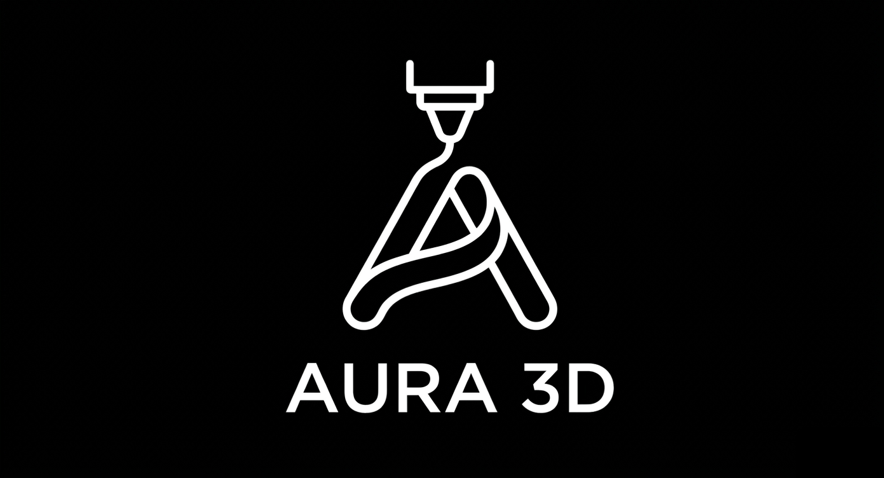
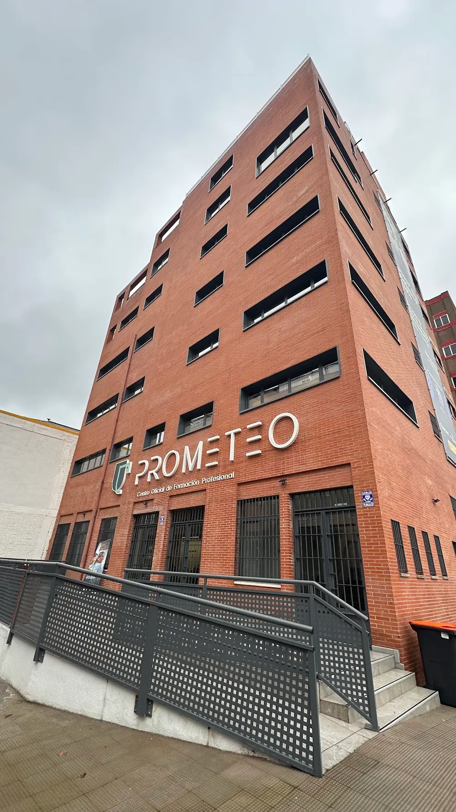
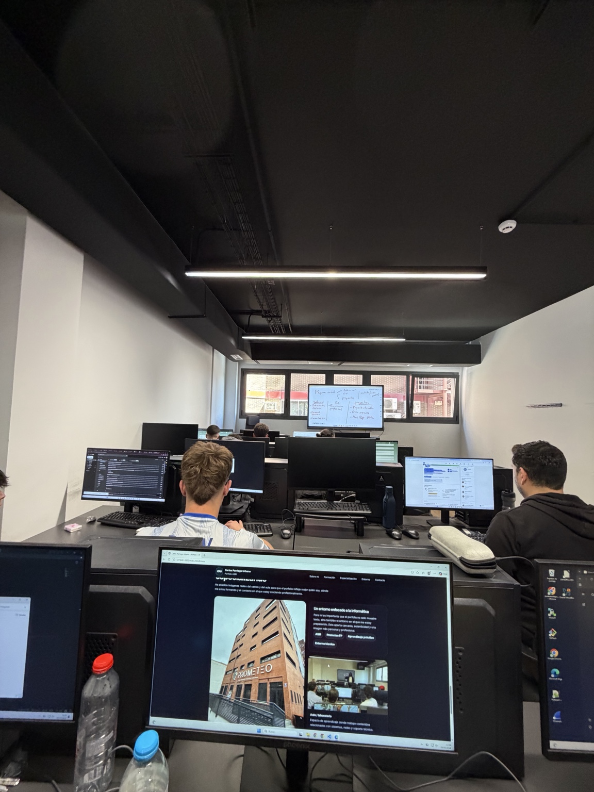

Estudiante de informática · ASIR
Carlos Parriego Urbano
Administración de Sistemas · Redes · Ciberseguridad
Estoy construyendo un perfil técnico orientado a sistemas, redes, ciberseguridad y soporte. Mi objetivo es seguir aprendiendo en entornos reales, demostrar una forma de trabajar seria y convertir lo que aprendo en resultados útiles.
Perfil profesional y lado personal
Un perfil profesional para conocer mi parte técnica y una sección más personal para mostrar mejor quién soy.
Presentación profesional
Soy Carlos Parriego Urbano y actualmente me estoy formando en el área de la informática, especialmente dentro de ASIR. Me considero una persona responsable, comprometida, resolutiva y con capacidad de adaptación.
Me gusta aprender de forma práctica, entender el porqué de cada configuración, instalación o proceso técnico y aplicar esos conocimientos en entornos reales o proyectos propios.
Responsable
Comprometido
Resolutivo
Adaptable
Trabajo en equipo
Curiosidad
Más allá de lo técnico
Aparte de la informática y de mis proyectos, me gusta desarrollarme continuamente como persona. Valoro ser innovador, mantenerme activo y no quedarme quieto, tanto a nivel de conocimientos como a nivel personal y psicológico.
También me gusta pasar tiempo con mis seres queridos, desconectar cuando lo necesito y dedicar momentos a mí mismo y a mi soledad. Creo que ese equilibrio me ayuda a conocerme mejor, mantener una mentalidad más clara y afrontar nuevos retos con más constancia.
Mi recorrido académico actual
Una visión rápida de la base desde la que estoy construyendo mi perfil técnico.
2025 · actualidad
Administración de Sistemas Informáticos en Red
Prometeo FP
Formación enfocada en sistemas, redes, virtualización, bases de datos, hardware y entornos técnicos.
2025 · actualidad
Máster en Ciberseguridad
Prometeo FP
Itinerario complementario orientado al desarrollo web y a la especialización en ciberseguridad.
2023 · 2025
Bachillerato
Colegio Lagomar
Etapa previa en la que desarrollé constancia, organización y una base para orientarme hacia el ámbito tecnológico.
Áreas en las que me estoy formando
Estas son las áreas principales que estoy trabajando actualmente.
01
Sistemas operativos
Manejo de entornos Windows Server y distribuciones Linux/Ubuntu con interés en instalación, administración y mantenimiento.
Sistemas operativos
Windows Server y Linux/Ubuntu.
Redes
LAN, IPv4, subnetting, VLANs y TCP/IP.
Ciberseguridad
Buenas prácticas y protección de entornos.
Virtualización
Laboratorios con Oracle VM VirtualBox.
Bases de datos
SQL, MySQL y PGAdmin.
Hardware y soporte
Montaje, mantenimiento e incidencias básicas.
Aplicaciones y tecnologías con las que trabajo
Además de la parte teórica, también trabajo con herramientas reales que utilizo durante mi formación y en proyectos prácticos.
Visual Studio Code
Editor principal para desarrollo web y organización del código.

Cisco Packet Tracer
Simulación de redes, topologías, VLANs, routing y prácticas de clase.

VirtualBox
Creación de laboratorios virtuales y pruebas con distintos sistemas.
pgAdmin
Gestión y práctica de bases de datos en entornos PostgreSQL.

HTML5
Estructuración de páginas y contenido web.

CSS3
Estilos, diseño responsive y mejora visual de interfaces.

JavaScript
Interactividad, lógica de la web y dinamismo en proyectos.

GitHub
Control de versiones, organización de proyectos y publicación del código.
3dAura
Proyecto de impresión 3D y presencia digital donde trabajo web, catálogo, diseño responsive, contenido, promociones interactivas y formularios.

Proyecto real · impresión 3D y web
3dAura
Dentro del proyecto he participado especialmente en la parte web, aplicando HTML, CSS y JavaScript para mejorar presentación, estructura, navegación, responsive y elementos interactivos.
HTMLCSSJavaScriptResponsiveNetlifyGitHubFormulariosCatálogo
Qué se trabaja
- Diseño y mejora visual de la web.
- Organización de catálogo y secciones.
- Adaptación responsive.
- Promociones interactivas.
- Formularios y presencia digital.
Tecnologías
HTMLCSSJavaScriptGitHubNetlifyResponsive DesignFormulariosCatálogo Web
Aprendizaje aplicado
- Desarrollo web aplicado a un proyecto real.
- Trabajo con estructura, diseño e interacción.
- Mejora de experiencia en distintos dispositivos.
- Mantenimiento de una web en evolución.
El centro donde me estoy especializando
Imágenes reales del centro y del aula para reflejar el contexto en el que estoy creciendo profesionalmente.

Un entorno enfocado a la informática
El porfolio también muestra el entorno donde me preparo, aportando cercanía, autenticidad e imagen profesional.
ASIRPrometeo FPAprendizaje prácticoEntorno técnico

¿Quieres conocer mejor mi perfil?
Aquí tienes las formas principales de contactar conmigo, consultar mi CV y ver mi actividad profesional. He dejado esta zona más visible para que sea fácil acceder a todo lo importante.
Disponible para seguir aprendiendo y crecer profesionalmente